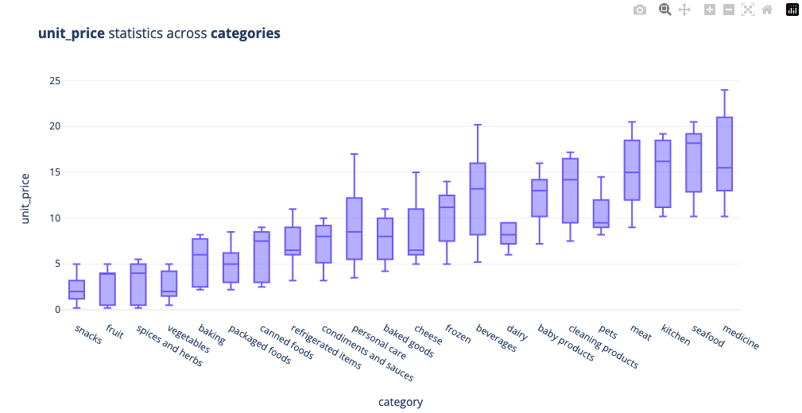
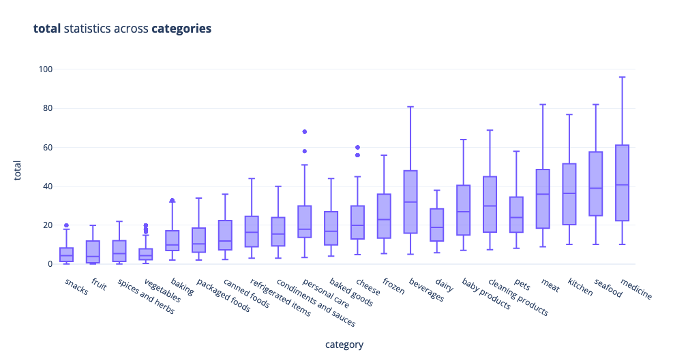
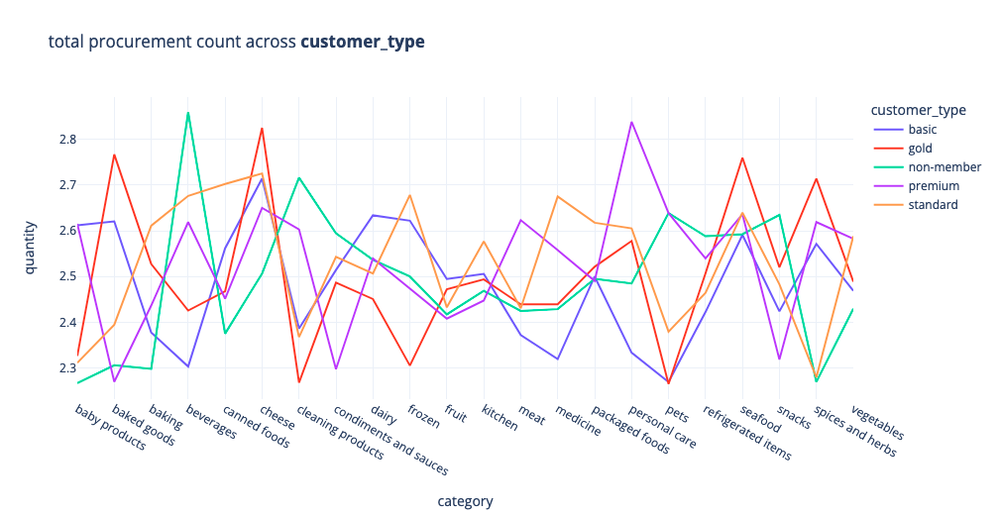
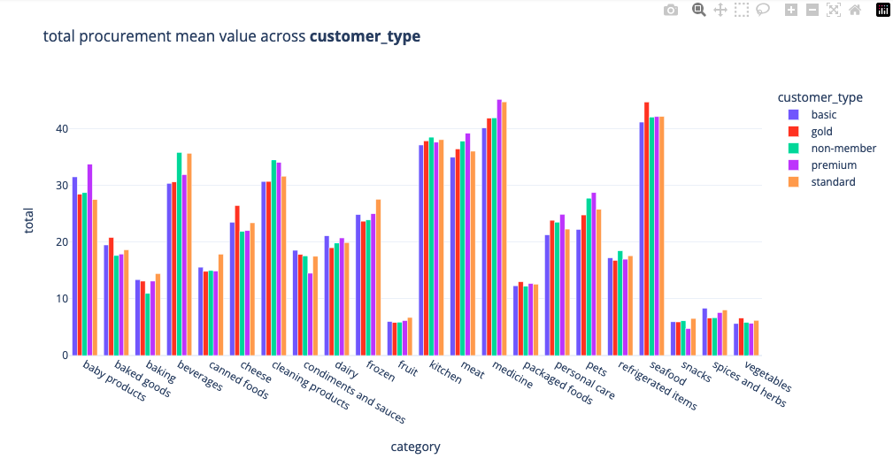
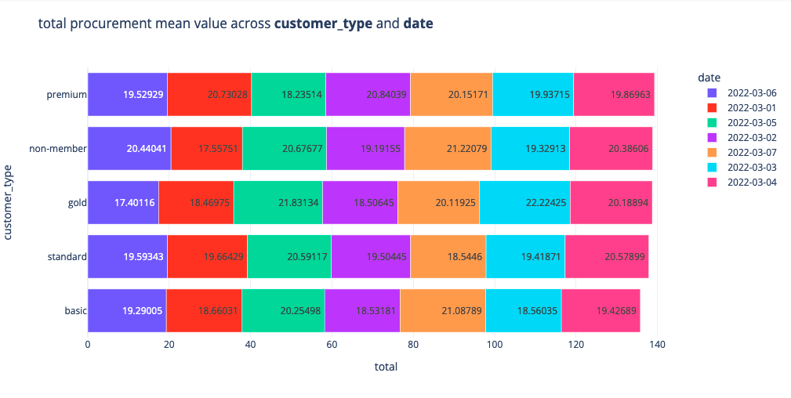
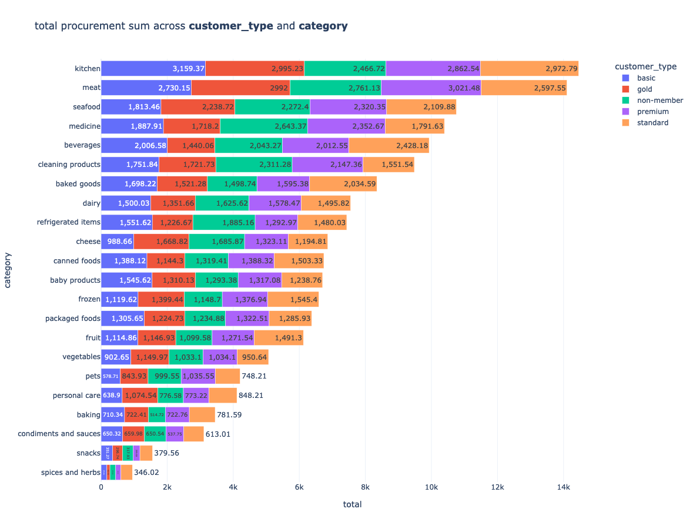
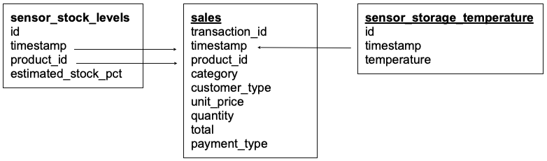
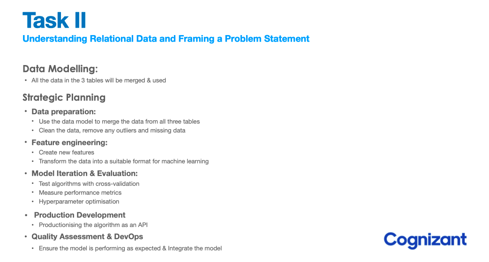
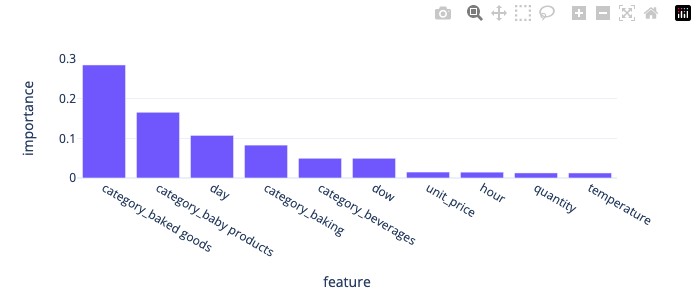
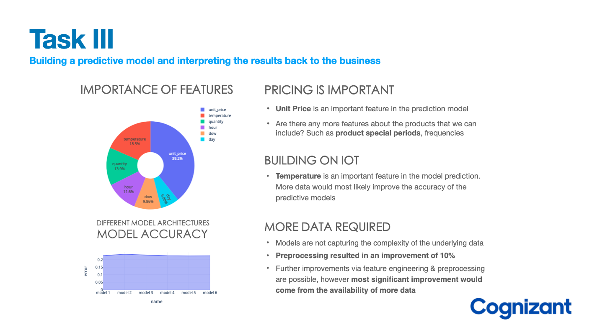

Prediction of Product Stock Levels¶

In this project, we work with a client Gala Groceries, who has contacted Cognizant for logistics advice about product storage
- Specifically, they are interested in wanting to know how better stock the items that they sell.
- Our role is to take on this project as a data scientist and understand what the client actually needs. This will result in the formulation/confirmation of a new project statement, in which we will be focusing on predicting stock levels of products.
- Such a model would enable the client to estimate their product stock levels at a given time & make subsequent business decisions in a more effective manner reducing understocking and overstocking losses.
Background¶
Project Statement¶
In this project, we aim to help Gala Groceries who have approached Cognizant to help them with supply chain issues. Specifically, they are interested in wanting to know how better stock the items that they sell
Can we accurately predict the stock levels of products based on sales data and sensor data on an hourly basis in order to more intelligently procure products from our suppliers?”
Gala Groceries¶
More information about the client:
- Gala Groceries is a technology-led grocery store chain based in the USA. They rely heavily on new technologies, such as IoT to give them a competitive edge over other grocery stores.
- They pride themselves on providing the best quality, fresh produce from locally sourced suppliers. However, this comes with many challenges to consistently deliver on this objective year-round.
Gala Groceries approached Cognizant to help them with a supply chain issue. Groceries are highly perishable items. If you overstock, you are wasting money on excessive storage and waste, but if you understock, then you risk losing customers. They want to know how to better stock the items that they sell.
This is a high-level business problem and will require you to dive into the data in order to formulate some questions and recommendations to the client about what else we need in order to answer that question
Clients dataset¶
The client has agreed to share data in the form of sensor data.
- They use sensors to measure temperature storage facilities where products are stored in the warehouse,
- And they also use stock levels within the refrigerators and freezers in store
Preview¶
Initially, the Data Engineering team is able to extract one weeks worth of sales data for one of the Gala Groceries stores, this will allow us to find some insights into the data and in general feel more confident with the data that we will be using in future machine learning modeling. Our task at hand is to summarise what we have learned from the data, as well as make some suggestions about what we will be needing in order to fulfill the business requirement of the client.
Let's take a look at our sample dataset:
+--------------------+-------------------+--------------------+--------+-------------+----------+--------+-----+------------+
| transaction_id| timestamp| product_id|category|customer_type|unit_price|quantity|total|payment_type|
+--------------------+-------------------+--------------------+--------+-------------+----------+--------+-----+------------+
|a1c82654-c52c-45b...|2022-03-02 09:51:38|3bc6c1ea-0198-46d...| fruit| gold| 3.99| 2| 7.98| e-wallet|
|931ad550-09e8-4da...|2022-03-06 10:33:59|ad81b46c-bf38-41c...| fruit| standard| 3.99| 1| 3.99| e-wallet|
|ae133534-6f61-4cd...|2022-03-04 17:20:21|7c55cbd4-f306-4c0...| fruit| premium| 0.19| 2| 0.38| e-wallet|
|157cebd9-aaf0-475...|2022-03-02 17:23:58|80da8348-1707-403...| fruit| gold| 0.19| 4| 0.76| e-wallet|
|a81a6cd3-5e0c-44a...|2022-03-05 14:32:43|7f5e86e6-f06f-45f...| fruit| basic| 4.49| 2| 8.98| debit card|
+--------------------+-------------------+--------------------+--------+-------------+----------+--------+-----+------------+
We have the following features
- transaction_id : represents a unique transaction identified
- timestamp : time at which a product was purchased
- product_id : the unique identifier of the product which was purchased
- category : the category of product which was purchased
- unit_price : the price of the purchased product
- quantity : the ammount of product purchased
- total : the total ammount of product purchased
- payment_type : the type of payment which the client used to purchase the product
Exploratory Data Analysis¶
Statistical Tests¶
Statistical tests are quite useful to check some hypothesis that can arise, let's use chi2 test to analyse the relationship between two categorical variables
import pingouin as pg
def crosstables(df,cat1,cat2):
print('>>>>>>>>>>>>>>>>>>>>>>>>>>>> Frequencies <<<<<<<<<<<<<<<<<<<<<<<<<<<<<<<<<<<<<<<')
print('')
w=pd.crosstab(df[cat1],df[cat2])
print(w)
print('')
print('>>>>>>>>>>>>>>>>>>>>>>>> Chi-square test <<<<<<<<<<<<<<<<<<<<<<<<<<<<<<<<<<<<<<<')
e,o,st=pg.chi2_independence(data=df,x=cat1,y=cat2)
print(f"Chi-Square Statistic:")
print(spark.createDataFrame(st.round(3)).show())
crosstables(df,'customer_type','quantity')
crosstables(df,'customer_type','payment_type')
crosstables(df,'payment_type','quantity')
crosstables(df,'category','customer_type')
crosstables(df,'category','quantity')
Let's check is there is any relationship between customer_type & quantities purchased
>>>>>>>>>>>>>>>>>>>>>>>>>>>> Frequencies <<<<<<<<<<<<<<<<<<<<<<<<<<<<<<<<<<<<<<<
quantity 1 2 3 4
customer_type
basic 405 350 395 376
gold 379 383 374 381
non-member 420 395 378 408
premium 384 397 422 387
standard 391 395 385 424
>>>>>>>>>>>>>>>>>>>>>>>> Chi-square test <<<<<<<<<<<<<<<<<<<<<<<<<<<<<<<<<<<<<<<
Chi-Square Statistic:
+------------------+------+------+----+-----+------+-----+
| test|lambda| chi2| dof| pval|cramer|power|
+------------------+------+------+----+-----+------+-----+
| pearson| 1.0| 10.52|12.0| 0.57| 0.021|0.175|
| cressie-read| 0.667| 10.52|12.0| 0.57| 0.021|0.175|
| log-likelihood| 0.0| 10.52|12.0| 0.57| 0.021|0.175|
| freeman-tukey| -0.5|10.522|12.0| 0.57| 0.021|0.175|
|mod-log-likelihood| -1.0|10.525|12.0| 0.57| 0.021|0.175|
| neyman| -2.0|10.534|12.0|0.569| 0.021|0.176|
+------------------+------+------+----+-----+------+-----+
Since the P value(pearson) is greater than 0.05 so there is no actual relationship between the customer_type and quantities**
Let's check is there is any relationship between customer_type & payment_type purchased
>>>>>>>>>>>>>>>>>>>>>>>>>>>> Frequencies <<<<<<<<<<<<<<<<<<<<<<<<<<<<<<<<<<<<<<<
payment_type cash credit card debit card e-wallet
customer_type
basic 373 386 391 376
gold 358 389 352 418
non-member 434 396 402 369
premium 434 382 388 386
standard 428 396 385 386
>>>>>>>>>>>>>>>>>>>>>>>> Chi-square test <<<<<<<<<<<<<<<<<<<<<<<<<<<<<<<<<<<<<<<
Chi-Square Statistic:
+------------------+------+------+----+-----+------+-----+
| test|lambda| chi2| dof| pval|cramer|power|
+------------------+------+------+----+-----+------+-----+
| pearson| 1.0|17.135|12.0|0.145| 0.027|0.282|
| cressie-read| 0.667|17.116|12.0|0.145| 0.027|0.282|
| log-likelihood| 0.0|17.084|12.0|0.146| 0.027|0.281|
| freeman-tukey| -0.5|17.066|12.0|0.147| 0.027|0.281|
|mod-log-likelihood| -1.0|17.051|12.0|0.148| 0.027| 0.28|
| neyman| -2.0|17.036|12.0|0.148| 0.027| 0.28|
+------------------+------+------+----+-----+------+-----+
Since the P value(pearson) is greater than 0.05 so there is no actual relationship between the customer_type and quantities**
Let's check is there is any relationship between payment_type & payment_type purchased
>>>>>>>>>>>>>>>>>>>>>>>>>>>> Frequencies <<<<<<<<<<<<<<<<<<<<<<<<<<<<<<<<<<<<<<<
quantity 1 2 3 4
payment_type
cash 480 502 495 550
credit card 506 485 460 498
debit card 483 451 488 496
e-wallet 510 482 511 432
>>>>>>>>>>>>>>>>>>>>>>>> Chi-square test <<<<<<<<<<<<<<<<<<<<<<<<<<<<<<<<<<<<<<<
Chi-Square Statistic:
+------------------+------+------+---+-----+------+-----+
| test|lambda| chi2|dof| pval|cramer|power|
+------------------+------+------+---+-----+------+-----+
| pearson| 1.0|17.613|9.0| 0.04| 0.027|0.331|
| cressie-read| 0.667|17.687|9.0|0.039| 0.027|0.333|
| log-likelihood| 0.0|17.843|9.0|0.037| 0.028|0.336|
| freeman-tukey| -0.5|17.966|9.0|0.036| 0.028|0.338|
|mod-log-likelihood| -1.0|18.095|9.0|0.034| 0.028|0.341|
| neyman| -2.0|18.371|9.0|0.031| 0.028|0.346|
+------------------+------+------+---+-----+------+-----+
Since all the p value(pearson) are lower than 0.05 so there is a relationship between payment_type and quantity. However, there is a very weak association between the payment type and quantity variables
Let's check is there is any relationship between category & customer_type purchased
>>>>>>>>>>>>>>>>>>>>>>>>>>>> Frequencies <<<<<<<<<<<<<<<<<<<<<<<<<<<<<<<<<<<<<<<
customer_type basic gold non-member premium standard
category
baby products 49 46 45 39 45
baked goods 87 73 85 89 109
baking 53 55 47 55 54
beverages 66 47 57 63 68
canned foods 89 77 88 93 84
cheese 42 63 77 60 51
cleaning products 57 56 67 63 49
condiments and sauces 35 37 37 37 35
dairy 71 71 82 76 75
frozen 45 59 48 55 56
fruit 186 197 187 206 222
kitchen 85 79 64 76 78
meat 78 82 73 77 72
medicine 47 41 63 52 40
packaged foods 106 94 101 104 102
personal care 30 45 33 31 38
pets 26 34 36 36 29
refrigerated items 90 73 102 76 84
seafood 44 50 54 55 50
snacks 59 50 52 44 58
spices and herbs 21 14 26 21 43
vegetables 160 174 177 182 153
>>>>>>>>>>>>>>>>>>>>>>>> Chi-square test <<<<<<<<<<<<<<<<<<<<<<<<<<<<<<<<<<<<<<<
Chi-Square Statistic:
+------------------+------+------+----+-----+------+-----+
| test|lambda| chi2| dof| pval|cramer|power|
+------------------+------+------+----+-----+------+-----+
| pearson| 1.0|87.391|84.0|0.378| 0.053|0.467|
| cressie-read| 0.667|86.838|84.0|0.394| 0.053|0.463|
| log-likelihood| 0.0|86.121|84.0|0.415| 0.052|0.459|
| freeman-tukey| -0.5|85.907|84.0|0.422| 0.052|0.458|
|mod-log-likelihood| -1.0|85.964|84.0| 0.42| 0.052|0.458|
| neyman| -2.0|86.886|84.0|0.393| 0.053|0.464|
+------------------+------+------+----+-----+------+-----+
Since all the p value(pearson) are greater than 0.05 so there is no relationship between customer_type and category
Let's check is there is any relationship between category & quantity purchased
>>>>>>>>>>>>>>>>>>>>>>>>>>>> Frequencies <<<<<<<<<<<<<<<<<<<<<<<<<<<<<<<<<<<<<<<
quantity 1 2 3 4
category
baby products 57 67 48 52
baked goods 122 107 103 111
baking 73 63 63 65
beverages 69 71 79 82
canned foods 106 110 104 111
cheese 57 66 86 84
cleaning products 77 75 62 78
condiments and sauces 43 48 49 41
dairy 92 89 96 98
frozen 65 61 75 62
fruit 271 251 238 238
kitchen 93 98 98 93
meat 107 87 94 94
medicine 60 65 60 58
packaged foods 129 118 125 135
personal care 39 43 50 45
pets 39 51 30 41
refrigerated items 112 100 99 114
seafood 54 58 65 76
snacks 69 62 69 63
spices and herbs 34 28 38 25
vegetables 211 202 223 210
>>>>>>>>>>>>>>>>>>>>>>>> Chi-square test <<<<<<<<<<<<<<<<<<<<<<<<<<<<<<<<<<<<<<<
Chi-Square Statistic:
+------------------+------+------+----+-----+------+-----+
| test|lambda| chi2| dof| pval|cramer|power|
+------------------+------+------+----+-----+------+-----+
| pearson| 1.0| 46.05|63.0|0.946| 0.044|0.361|
| cressie-read| 0.667|46.011|63.0|0.947| 0.044| 0.36|
| log-likelihood| 0.0|46.008|63.0|0.947| 0.044| 0.36|
| freeman-tukey| -0.5|46.071|63.0|0.946| 0.044|0.361|
|mod-log-likelihood| -1.0|46.191|63.0|0.945| 0.044|0.362|
| neyman| -2.0| 46.61|63.0|0.939| 0.045|0.366|
+------------------+------+------+----+-----+------+-----+
Since all the p value(pearson) are greater than 0.05 so there is no relationship between category and quantity
From most tests we can conclude that there is only a relationship between payment_type and quantity amongst the tested categorical column comparison cases
Visualisations¶
Visualisation & utilisation of data wrangling to understand our data a little more and feel more comfortable with it is an important part of a DS project, some interesting findings are included below:
Category based statistics¶
Meat, kitchen, seafood & medicine are amongst the highely prices units, snacks & fruit are amongst the more cheaper items sold at the store

The total sum of purchases gives us the following information:

Customer Type Visualisations¶
Whilst we will be more focusing on the task of creating a model that will predict the estimated stock levels, some interesting insights into customer purchases are still interesting to explore, for example, on average non members tend to buy more beverages, gold members tend to procure more cheese products, premium members tend to produre more personalised case products

We can also visualise the mean producure ment values for each category, premium and basic members tend to spend more on baby products

We can divide our data into different days and visualise the procurement mean of each customer_type. premium and non-members tend to spend the most

Let's look at the breakdown of the contibution to the total procurement of each customer type across each category

Of course there are many more things we can explore, let's focus on the business task at hand and write an email to the DS lead about the client's request.
Framing the Problem Statement¶
Letter to DS lead¶
We have to email the findings of our data exploration & discuss our ideas about the client's needs
Dear [insert name of recipient]
I received the sample dataset from the Data Engineering team and I’ve been analysing the sample on behalf of the Data Science team.
I found the following insights as part of the analysis:
- Fruit & vegetables are the 2 most frequently bought product categories
- Non-members are the most frequent buyers within the store
- Cash is the most frequently used payment method
- 11am is the busiest hour with regards to number of transactions
- On average non-members overspent gold, standard and basic members & premium members spent the most
As a reminder, the client has indicated that they wanted to know the following: “How to better stock the items that they sell.”
With respect to this business question, my recommendations are the following:
As this is a very broad statement, we need to identify a specific problem statement that the business would like to solve, so as an example, we can focus on predicting the store demand on an hourly basis, in order to smooth out the procurement logistics of each store so that they procure only the necessary product quantities on a weekly basis. We obviously need more data, the current sample only covers a week worth of data at a single store.
Based on the problem statement that we move forward with, we will need more informative dataset features related to stocking of products, for example, if we’re modelling demand for products, we may want to include information about stock levels or weather conditions, customer spending habits, all these feature combinations must be tested.
Kind Regards,
[name of sender]
Model Diagram¶
Having clarified the problem statement, the data engineering team has provided a data model of the available tables of data that has been provided by the client, based on different sensor readings
sales table is the same as in our initial Initial Data Exploration (with the exception that we have more data now).
Additional IoT data (as per our request):
- The client has sensors that monitor the estimated stock of each product
product_id,estimated_stock_pct(this will be our target variable), this is stored in sensor_stock_levels table. - sensor data is also available to us, this data monitors the storage facility temperature data, this is stored in table sensor_storage_temperature
- As before we have the sales data stored in the sales table

Stategic Plan¶
Lets define a plan as to how we'll use the data to solve the problem statement that the client has positioned. This plan will be used to describe to the client how we are planning to complete the remaining work and to build trust with the client as a domain expert

Baseline Model¶
Modeling is an iterative process, let's begin with a general baseline, upon which we will try to improve, by considering a much larger range of preprocessing & model options. As defined in the strategic plan, we will go through most of the steps, however we'll keep things a little more simple at first, and do more testing in subsequent iterations.
- Preprocessing: Filling NaN, Adding Date Features, Adding one-hot-encoding of category
- Modeling: RandomForest with default hyperparameters, we test 10 random splits and average the MAE
Datasets¶
Samples from the three datasets are defined above can be visualised below:
+--------------------+-------------------+--------------------+--------+-------------+----------+--------+-----+------------+
| transaction_id| timestamp| product_id|category|customer_type|unit_price|quantity|total|payment_type|
+--------------------+-------------------+--------------------+--------+-------------+----------+--------+-----+------------+
|a1c82654-c52c-45b...|2022-03-02 09:51:38|3bc6c1ea-0198-46d...| fruit| gold| 3.99| 2| 7.98| e-wallet|
|931ad550-09e8-4da...|2022-03-06 10:33:59|ad81b46c-bf38-41c...| fruit| standard| 3.99| 1| 3.99| e-wallet|
|ae133534-6f61-4cd...|2022-03-04 17:20:21|7c55cbd4-f306-4c0...| fruit| premium| 0.19| 2| 0.38| e-wallet|
|157cebd9-aaf0-475...|2022-03-02 17:23:58|80da8348-1707-403...| fruit| gold| 0.19| 4| 0.76| e-wallet|
|a81a6cd3-5e0c-44a...|2022-03-05 14:32:43|7f5e86e6-f06f-45f...| fruit| basic| 4.49| 2| 8.98| debit card|
+--------------------+-------------------+--------------------+--------+-------------+----------+--------+-----+------------+
+--------------------+-------------------+--------------------+-------------------+
| id| timestamp| product_id|estimated_stock_pct|
+--------------------+-------------------+--------------------+-------------------+
|4220e505-c247-478...|2022-03-07 12:13:02|f658605e-75f3-4fe...| 0.75|
|f2612b26-fc82-49e...|2022-03-07 16:39:46|de06083a-f5c0-451...| 0.48|
|989a287f-67e6-447...|2022-03-01 18:17:43|ce8f3a04-d1a4-43b...| 0.58|
|af8e5683-d247-46a...|2022-03-02 14:29:09|c21e3ba9-92a3-474...| 0.79|
|08a32247-3f44-400...|2022-03-02 13:46:18|7f478817-aa5b-44e...| 0.22|
+--------------------+-------------------+--------------------+-------------------+
+--------------------+-------------------+-----------+
| id| timestamp|temperature|
+--------------------+-------------------+-----------+
|d1ca1ef8-0eac-42f...|2022-03-07 15:55:20| 2.96|
|4b8a66c4-0f3a-4f1...|2022-03-01 09:18:22| 1.88|
|3d47a0c7-1e72-451...|2022-03-04 15:12:26| 1.78|
|9500357b-ce15-424...|2022-03-02 12:30:42| 2.18|
|c4b61fec-99c2-4c6...|2022-03-05 09:09:33| 1.38|
+--------------------+-------------------+-----------+
Preprocessing¶
Converting to datetime¶
We first need to convert the str format columns into datetime columns
def convert_to_datetime(data: pd.DataFrame = None, column: str = None):
dummy = data.copy()
dummy[column] = pd.to_datetime(dummy[column], format='%Y-%m-%d %H:%M:%S')
return dummy
sales_df = convert_to_datetime(sales_df, 'timestamp')
stock_df = convert_to_datetime(stock_df, 'timestamp')
temp_df = convert_to_datetime(temp_df, 'timestamp')
Converting to datetime¶
If we revisit the problem statement:
“Can we accurately predict the stock levels of products, based on sales data and sensor data,
on an hourly basis in order to more intelligently procure products from our suppliers.”
- The client indicates that they want the model to predict on an hourly basis.
- Looking at the data model, we can see that only column that we can use to merge the 3 datasets together is timestamp
- So, we must first transform the timestamp column in all 3 datasets to be based on the hour of the day, then we can merge the datasets together
from datetime import datetime
# helper function to convert datetime to desired format
def convert_timestamp_to_hourly(data: pd.DataFrame = None, column: str = None):
dummy = data.copy()
new_ts = dummy[column].tolist() # timestamp list [Timestamp(),Timestamp(),...]
new_ts = [i.strftime('%Y-%m-%d %H:00:00') for i in new_ts] # change the value of timestamp
new_ts = [datetime.strptime(i, '%Y-%m-%d %H:00:00') for i in new_ts] # change to datetime
dummy[column] = new_ts # replace
return dummy
sales_df = convert_timestamp_to_hourly(sales_df, 'timestamp')
stock_df = convert_timestamp_to_hourly(stock_df, 'timestamp')
temp_df = convert_timestamp_to_hourly(temp_df, 'timestamp')
Aggregations¶
For the sales data, we want to group the data by timestamp but also by product_id. When we aggregate, since the client is interested in hourly product estimates. We must choose which columns to aggregate by the grouping. For now, let's aggregate quantity and get the total sum.
sales_agg = sales_df.groupby(['timestamp', 'product_id'],as_index=False).agg({'quantity': 'sum'})
# +-------------------+--------------------+--------+
# | timestamp| product_id|quantity|
# +-------------------+--------------------+--------+
# |2022-03-01 09:00:00|00e120bb-89d6-4df...| 3|
# |2022-03-01 09:00:00|01f3cdd9-8e9e-4df...| 3|
# |2022-03-01 09:00:00|03a2557a-aa12-4ad...| 3|
# |2022-03-01 09:00:00|049b2171-0eeb-4a3...| 7|
# |2022-03-01 09:00:00|04da844d-8dba-447...| 11|
# +-------------------+--------------------+--------+
stock_agg = stock_df.groupby(['timestamp', 'product_id'],as_index=False).agg({'estimated_stock_pct': 'mean'})
# +-------------------+--------------------+-------------------+
# | timestamp| product_id|estimated_stock_pct|
# +-------------------+--------------------+-------------------+
# |2022-03-01 09:00:00|00e120bb-89d6-4df...| 0.89|
# |2022-03-01 09:00:00|01f3cdd9-8e9e-4df...| 0.14|
# |2022-03-01 09:00:00|01ff0803-ae73-423...| 0.67|
# |2022-03-01 09:00:00|0363eb21-8c74-47e...| 0.82|
# |2022-03-01 09:00:00|03f0b20e-3b5b-444...| 0.05|
# +-------------------+--------------------+-------------------+
temp_agg = temp_df.groupby(['timestamp'],as_index=False).agg({'temperature': 'mean'})
# +-------------------+--------------------+
# | timestamp| temperature|
# +-------------------+--------------------+
# |2022-03-01 09:00:00|-0.02884984025559...|
# |2022-03-01 10:00:00| 1.2843137254901962|
# |2022-03-01 11:00:00| -0.56|
# |2022-03-01 12:00:00| -0.5377210884353741|
# |2022-03-01 13:00:00|-0.18873417721518987|
# +-------------------+--------------------+
sales_agg : We now have an aggregated sales data where each row represents a unique combination of hour during which the sales took place from that weeks worth of data and the product_id. We summed the quantity and we took the mean average of the unit_price
stock_agg : This shows us the average stock percentage of each product at unique hours within the week of sample data
temp_agg : This gives us the average temperature of the storage facility where the produce is stored in the warehouse by unique hours during the week
Merging Data¶
Currently we have 3 datasets. In order to include all of this data within a predictive model, we need to merge them together into 1 dataframe.
# merge sales & stock
merged_df = stock_agg.merge(sales_agg, on=['timestamp', 'product_id'], how='left')
merged_df = merged_df.merge(temp_agg, on='timestamp', how='left')
merged_df.info()
<class 'pandas.core.frame.DataFrame'>
Int64Index: 10845 entries, 0 to 10844
Data columns (total 5 columns):
# Column Non-Null Count Dtype
--- ------ -------------- -----
0 timestamp 10845 non-null datetime64[ns]
1 product_id 10845 non-null object
2 estimated_stock_pct 10845 non-null float64
3 quantity 3067 non-null float64
4 temperature 10845 non-null float64
dtypes: datetime64[ns](1), float64(3), object(1)
memory usage: 508.4+ KB
We can see from the .info() method that we have some null values. These need to be treated before we can build a predictive model. The column that features some null values is quantity. We can assume that if there is a null value for this column, it represents that there were 0 sales of this product within this hour. So, lets fill this columns null values with 0
Adding Additional Features¶
Next, we can add the category & unit_price to each of the rows by creating unique product_id tables
product_categories = sales_df[['product_id', 'category']]
product_categories = product_categories.drop_duplicates()
product_price = sales_df[['product_id', 'unit_price']]
product_price = product_price.drop_duplicates()
merged_df = merged_df.merge(product_categories, on="product_id", how="left")
merged_df = merged_df.merge(product_price, on="product_id", how="left")
merged_df.head()
+-------------------+--------------------+-------------------+--------+--------------------+-------------+------------+------------+----------+
| timestamp| product_id|estimated_stock_pct|quantity| temperature| category|unit_price_x|unit_price_y|unit_price|
+-------------------+--------------------+-------------------+--------+--------------------+-------------+------------+------------+----------+
|2022-03-01 09:00:00|00e120bb-89d6-4df...| 0.89| 3.0|-0.02884984025559...| kitchen| 11.19| 11.19| 11.19|
|2022-03-01 09:00:00|01f3cdd9-8e9e-4df...| 0.14| 3.0|-0.02884984025559...| vegetables| 1.49| 1.49| 1.49|
|2022-03-01 09:00:00|01ff0803-ae73-423...| 0.67| 0.0|-0.02884984025559...|baby products| 14.19| 14.19| 14.19|
|2022-03-01 09:00:00|0363eb21-8c74-47e...| 0.82| 0.0|-0.02884984025559...| beverages| 20.19| 20.19| 20.19|
|2022-03-01 09:00:00|03f0b20e-3b5b-444...| 0.05| 0.0|-0.02884984025559...| pets| 8.19| 8.19| 8.19|
+-------------------+--------------------+-------------------+--------+--------------------+-------------+------------+------------+----------+
Feature Engineering¶
Time based features¶
Intuitively, time based features often have has significant relevance
merged_df['day'] = merged_df['timestamp'].dt.day
merged_df['dow'] = merged_df['timestamp'].dt.dayofweek
merged_df['hour'] = merged_df['timestamp'].dt.hour
merged_df.drop(columns=['timestamp'], inplace=True)
+--------------------+-------------------+--------+--------------------+-------------+----------+---+---+----+
| product_id|estimated_stock_pct|quantity| temperature| category|unit_price|day|dow|hour|
+--------------------+-------------------+--------+--------------------+-------------+----------+---+---+----+
|00e120bb-89d6-4df...| 0.89| 3.0|-0.02884984025559...| kitchen| 11.19| 1| 1| 9|
|01f3cdd9-8e9e-4df...| 0.14| 3.0|-0.02884984025559...| vegetables| 1.49| 1| 1| 9|
|01ff0803-ae73-423...| 0.67| 0.0|-0.02884984025559...|baby products| 14.19| 1| 1| 9|
|0363eb21-8c74-47e...| 0.82| 0.0|-0.02884984025559...| beverages| 20.19| 1| 1| 9|
|03f0b20e-3b5b-444...| 0.05| 0.0|-0.02884984025559...| pets| 8.19| 1| 1| 9|
+--------------------+-------------------+--------+--------------------+-------------+----------+---+---+----+
One-Hot Encoding¶
We have a few categorical features, which we need to preprocess if they are to be used in our model, lets start with one hot encoding of category
<class 'pandas.core.frame.DataFrame'>
Int64Index: 10845 entries, 0 to 10844
Data columns (total 31 columns):
# Column Non-Null Count Dtype
--- ------ -------------- -----
0 timestamp 10845 non-null datetime64[ns]
1 product_id 10845 non-null object
2 estimated_stock_pct 10845 non-null float64
3 quantity 10845 non-null float64
4 temperature 10845 non-null float64
5 unit_price 10845 non-null float64
6 day 10845 non-null int64
7 dow 10845 non-null int64
8 hour 10845 non-null int64
9 category_baby products 10845 non-null uint8
10 category_baked goods 10845 non-null uint8
11 category_baking 10845 non-null uint8
12 category_beverages 10845 non-null uint8
13 category_canned foods 10845 non-null uint8
14 category_cheese 10845 non-null uint8
15 category_cleaning products 10845 non-null uint8
16 category_condiments and sauces 10845 non-null uint8
17 category_dairy 10845 non-null uint8
18 category_frozen 10845 non-null uint8
19 category_fruit 10845 non-null uint8
20 category_kitchen 10845 non-null uint8
21 category_meat 10845 non-null uint8
22 category_medicine 10845 non-null uint8
23 category_packaged foods 10845 non-null uint8
24 category_personal care 10845 non-null uint8
25 category_pets 10845 non-null uint8
26 category_refrigerated items 10845 non-null uint8
27 category_seafood 10845 non-null uint8
28 category_snacks 10845 non-null uint8
29 category_spices and herbs 10845 non-null uint8
30 category_vegetables 10845 non-null uint8
dtypes: datetime64[ns](1), float64(4), int64(3), object(1), uint8(22)
memory usage: 1.1+ MB
Okay, now that we have assembled our dataset, lets understand what we are actually modeling; our aim is to train a model that will be able to predict the estimated_stock_pct
Modeling¶
Time to do some modeling! estimated_stock_pct is our target variable.
X = merged_df.drop(columns=['estimated_stock_pct'])
y = merged_df['estimated_stock_pct']
print(X.shape)
print(y.shape)
# (10845, 29)
# (10845,)
This shows that we have 29 predictor variables that we will train our machine learning model on and 10845 rows of data. Now let's define how many folds we want to complete during training, and how much of the dataset to assign to training, leaving the rest for test. Let's create a loop to train K models with a 75/25% random split of the data each time between training and test samples.
We repeat the training process 10 times and average the MAE across the different test subsets
from sklearn.ensemble import RandomForestRegressor
from sklearn.model_selection import train_test_split as tts
from sklearn.metrics import mean_absolute_error
K = 10
split = 0.75
accuracy = []
for fold in range(0, K):
model = RandomForestRegressor()
X_train, X_test, y_train, y_test = tts(X, y,
train_size=0.75,
random_state=42)
trained_model = model.fit(X_train, y_train)
y_pred = trained_model.predict(X_test)
mae = mean_absolute_error(y_test,y_pred)
accuracy.append(mae)
print(f"Fold {fold + 1}: MAE = {mae:.3f}")
print(f"Average MAE: {(sum(accuracy) / len(accuracy)):.2f}")
Fold 1: MAE = 0.236
Fold 2: MAE = 0.236
Fold 3: MAE = 0.237
Fold 4: MAE = 0.237
Fold 5: MAE = 0.236
Fold 6: MAE = 0.237
Fold 7: MAE = 0.236
Fold 8: MAE = 0.236
Fold 9: MAE = 0.236
Fold 10: MAE = 0.236
Average MAE: 0.24
We can see that the mean absolute error (MAE) is almost exactly the same each time, averaged to 0.24. This is a good sign, it shows that the performance of the model is consistent across different random samples of the data, which is what we want. In other words, it shows a robust nature.
MAE was chosen as a performance metric because it describes how closely the machine learning model was able to predict the exact value of estimated_stock_pct
Even though the model is predicting robustly, this value for MAE is not so good, since the average value of the target variable is around 0.51, meaning that the accuracy as a percentage was around 50%. In an ideal world, we would want the MAE to be as low as possible.
import plotly.express as px
features = [i.split("__")[0] for i in X.columns]
feat_map = dict(zip([i for i in range(0,len(features))],features))
importances = model.feature_importances_[:10]
indices = np.argsort(importances)[:10]
feature = list(map(feat_map.get,indices))
ldf = pd.DataFrame({'feature':feature,
'importance':importances})
ldf = ldf.sort_values(by='importance',ascending=False)
px.bar(ldf,x='feature',y='importance',template='plotly_white',height=300,width=700)

Despite not having an optimised model, we can still visualise the features that impact the model predictions. We can see that baked goods and baby products categories are important, however we should first optimise the model.
Model Optimisation¶
Having a baseline, lets focus some attention to feature transformations as they can impact model accuracy. We'll also pay more attention to variations of machine learning models and utilise our knowledge of hyperaparameters and gridsearch optimisation to find the most optimal hyperparameters
- Preprocessing: Filling NaN, Adding Date Features, Logarithmic Feature Transformation, Normalisation of features, label encoding with and without numerical column normalisation
- Modeling: For modeling we investigate how different models perform using a gridsearch optimisation cycle for different models
Recap Preprocessing¶
Not a bad start start, however the client won't be satisfied with a model that performs this poorly, we need to make at least explore how well this model performs compared to other models for a start. We also need to spend more time on data preparation
# read datasets
sales_df = pd.read_csv(f"sales.csv")
sales_df.drop(columns=["Unnamed: 0"], inplace=True, errors='ignore')
stock_df = pd.read_csv(f"sensor_stock_levels.csv")
stock_df.drop(columns=["Unnamed: 0"], inplace=True, errors='ignore')
temp_df = pd.read_csv(f"sensor_storage_temperature.csv")
temp_df.drop(columns=["Unnamed: 0"], inplace=True, errors='ignore')
def convert_to_datetime(data: pd.DataFrame = None, column: str = None):
dummy = data.copy()
dummy[column] = pd.to_datetime(dummy[column], format='%Y-%m-%d %H:%M:%S')
return dummy
# convert str to datetime
sales_df = convert_to_datetime(sales_df, 'timestamp')
stock_df = convert_to_datetime(stock_df, 'timestamp')
temp_df = convert_to_datetime(temp_df, 'timestamp')
from datetime import datetime
# helper function to convert datetime to desired format
def convert_timestamp_to_hourly(data: pd.DataFrame = None, column: str = None):
dummy = data.copy()
new_ts = dummy[column].tolist() # timestamp list [Timestamp(),Timestamp(),...]
new_ts = [i.strftime('%Y-%m-%d %H:00:00') for i in new_ts] # change the value of timestamp
new_ts = [datetime.strptime(i, '%Y-%m-%d %H:00:00') for i in new_ts] # change to datetime
dummy[column] = new_ts # replace
return dummy
# convert datetime to hour approximation
sales_df = convert_timestamp_to_hourly(sales_df, 'timestamp')
stock_df = convert_timestamp_to_hourly(stock_df, 'timestamp')
temp_df = convert_timestamp_to_hourly(temp_df, 'timestamp')
# aggregate data based on time & product ID
# total sales & mean estimated stock percentage
# add temperature aggregations for timestamp
sales_agg = sales_df.groupby(['timestamp', 'product_id'],as_index=False).agg({'quantity': 'sum'})
stock_agg = stock_df.groupby(['timestamp', 'product_id'],as_index=False).agg({'estimated_stock_pct': 'mean'})
temp_agg = temp_df.groupby(['timestamp'],as_index=False).agg(temp_max=('temperature',"mean"),
temp_min=('temperature','min'),
temp_median=('temperature','median'),
temp_mean=('temperature','mean'))
merged_df = stock_agg.merge(sales_agg, on=['timestamp', 'product_id'], how='left')
merged_df = merged_df.merge(temp_agg, on='timestamp', how='left')
merged_df['quantity'] = merged_df['quantity'].fillna(0)
# add features to aggregated dataframe
product_categories = sales_df[['product_id', 'category']]
product_categories = product_categories.drop_duplicates()
product_price = sales_df[['product_id', 'unit_price']]
product_price = product_price.drop_duplicates()
merged_df = merged_df.merge(product_categories, on="product_id", how="left")
merged_df = merged_df.merge(product_price, on="product_id", how="left")
# add time based features
merged_df['day'] = merged_df['timestamp'].dt.day
merged_df['dow'] = merged_df['timestamp'].dt.dayofweek
merged_df['hour'] = merged_df['timestamp'].dt.hour
spark.createDataFrame(merged_df.tail()).show()
+-------------------+--------------------+-------------------+--------+--------------------+--------+-----------+--------------------+--------------+----------+---+---+----+
| timestamp| product_id|estimated_stock_pct|quantity| temp_max|temp_min|temp_median| temp_mean| category|unit_price|day|dow|hour|
+-------------------+--------------------+-------------------+--------+--------------------+--------+-----------+--------------------+--------------+----------+---+---+----+
|2022-03-07 19:00:00|ecac012c-1dec-41d...| 0.5| 4.0|-0.16507739938080493| -30.58| 0.18|-0.16507739938080493| fruit| 4.99| 7| 0| 19|
|2022-03-07 19:00:00|ed7f6b14-67c9-42a...| 0.26| 0.0|-0.16507739938080493| -30.58| 0.18|-0.16507739938080493| meat| 19.99| 7| 0| 19|
|2022-03-07 19:00:00|edf4ac93-4e14-4a3...| 0.78| 3.0|-0.16507739938080493| -30.58| 0.18|-0.16507739938080493|packaged foods| 6.99| 7| 0| 19|
|2022-03-07 19:00:00|f01b189c-6345-463...| 0.92| 3.0|-0.16507739938080493| -30.58| 0.18|-0.16507739938080493| meat| 14.99| 7| 0| 19|
|2022-03-07 19:00:00|f3bec808-bee0-459...| 0.01| 2.0|-0.16507739938080493| -30.58| 0.18|-0.16507739938080493| beverages| 5.19| 7| 0| 19|
+-------------------+--------------------+-------------------+--------+--------------------+--------+-----------+--------------------+--------------+----------+---+---+----+
Feature Transformations¶
One of the important things to notice is whether the distribution itself is having an influence on the model evaluation metrics, so let's look into two forms for preprocessing; column transformation & normalisation & label encoding
In the following section, we'll be creating different dataframe variations of merged_df:
- merged_df_tr : Which will contain only column transformations & label encoding
- merged_df_tr_minmax : The same transformations as merged_df_tr but with the addition of normalisation
Column Transformations¶
Let us now check the skewness values for each of the columns
from scipy.stats import skew,kurtosis
skew_data = merged_df[c].apply(lambda x: skew(x),axis=0)
# estimated_stock_pct 0.006773
# quantity 2.384249
# temp_median 0.068542
# unit_price 0.507440
# day -0.002082
# dow 0.002152
# hour -0.001072
# dtype: float64
Our skewness value for quantity is rather high, lets use logarithmic transformation to modify the univariate distribution & compare the boxplot distributions for the numeric columns
# column transformations
def log_column(df,columns):
df[columns] = df[columns].apply(lambda x: np.log(x + 1))
return df
merged_df_tr = log_column(merged_df,'quantity')
px.box(merged_df_tr[c],
y=merged_df[c].columns,
template='plotly_white',
width=600,height=400,
title='univariate feature distribution')
Looks much better now, lets also check the skewness metric once again to confirm we have a numeric improvement
skew_data = merged_df[c].apply(lambda x: skew(x),axis=0)
# estimated_stock_pct 0.006773
# quantity 1.357097
# temp_median 0.068542
# unit_price 0.507440
# day -0.002082
# dow 0.002152
# hour -0.001072
# dtype: float64
Normalisation of columns¶
Another often important column transformation is normalisation, let's utilise MinMax normalisation for numerical columns
from sklearn.preprocessing import MaxAbsScaler,Normalizer
# column normalisation
def normalise_columns(df,columns,norm_id):
normaliser = Normalizer(norm=norm_id)
df[columns] = normaliser.fit_transform(df[columns])
return df
# transformation & minmax
merged_df_tr_minmax = normalise_columns(merged_df_tr,numerical,'max')
from sklearn.preprocessing import LabelEncoder,OneHotEncoder
import seaborn as sns
# encoding transformations
le=LabelEncoder()
merged_df_tr['category']=le.fit_transform(merged_df_tr['category'])
merged_df_tr_minmax['category']=le.fit_transform(merged_df_tr_minmax['category'])
Helper Functions¶
Its good practice to start grouping things that will allow us to automate the machine learning training loop
split_datawill be used to remove irrelovant columns (this will be standard for all incoming dataframes) & do a train/test split of the dataset, so we can do both evaluation & test metric accessments (via GridSearch + Test set)p&ptfunctions are used for cross validation & train/test split metric assessment using MAE- We'll try a variety of models:
- HistGradientBoostingRegressor (More efficient Gradient Boosting)
- AdaBoostRegressor (Simple Gradient Boosting)
- RandomForestRegressor (Decision Tree Ensemble)
- SGDRegressor (Optimisable LR w/ regularisation options in gradient boosting etc)
- ARDRegression (LR that automatically determines the relevance of each feature in making predictions)
And we'll conclude which performs best
from sklearn.model_selection import train_test_split as tts
def split_data(df):
# remove product_id, category
df = df[df.columns.difference(['product_id','category'])]
y=df.estimated_stock_pct
x=df.drop(columns='estimated_stock_pct')
xtrain , xtest, ytrain, ytest = tts(x,y,shuffle=True,train_size=.75)
print(f"xtrain: {xtrain.shape} and xtest: {xtest.shape}")
print(f"ytrain: {ytrain.shape} and ytest: {ytest.shape}")
return xtrain,xtest,ytrain,ytest
# randomised gridsearch cross validation (7 kfolds)
def p(g,model,name):
pt=RandomizedSearchCV(estimator=model,cv=7,
param_distributions=g,
n_jobs=-1,
random_state=344)
pt.fit(xtrain,ytrain)
best = pt.best_estimator_
best.fit(xtrain,ytrain)
ypred = best.predict(xtest)
pk.dump(best, open(f'"{name}.pkl"', 'wb'))
return name,mean_absolute_error(ytest,ypred)
# Standard Train/Test evaluation
def pt(model,name):
model.fit(xtrain,ytrain)
ypred = model.predict(xtest)
pk.dump(model, open(f'"{name}.pkl"', 'wb'))
return name,mean_absolute_error(ytest,ypred)
def check_models():
results = {'name':[],'mae':[]}
# Histogram Gradient Boosting
h=HistGradientBoostingRegressor(random_state=34563,
max_bins=244,
max_depth=30)
g={'learning_rate':[0.1,0.01],
'max_iter':[100,200,500,600,800,900],
'max_leaf_nodes':[20,30],
'l2_regularization':[1,0.01],
'tol':[1e-7,1e-8]}
name,mae = p(g,h,'histgrdbstreg')
results['name'].append(name); results['mae'].append(mae)
# Adaboost Gradient Boosting
ada=AdaBoostRegressor(estimator=DecisionTreeRegressor(max_depth=16))
grid={'n_estimators':[7,8,10],
'learning_rate':[1.2,1.6,2],
'loss':['linear', 'square', 'exponential']}
name,mae = p(grid,ada,'adabstreg')
results['name'].append(name); results['mae'].append(mae)
# Bagging Regressor
bag=BaggingRegressor(estimator=DecisionTreeRegressor(max_depth=17),
oob_score=False,
n_jobs=-1)
bgrid={'n_estimators':[10,13,16]}
name, mae = p(bgrid,bag,'bagreg')
results['name'].append(name); results['mae'].append(mae)
# Random Forest
r=RandomForestRegressor(n_jobs=-1,oob_score=True)
rgrid={'max_depth':[170,190,200,210],
'max_features':['sqrt', 'log2'],
'max_samples':[30,100,150,200],
'max_leaf_nodes':[20,40,60,100]}
name,mae = p(rgrid,r,'randfrstreg')
results['name'].append(name); results['mae'].append(mae)
# Stochastic Gradient Regressor
sgd=SGDRegressor()
sgdg={'penalty':['l2', 'l1', 'elasticnet', None],
'max_iter':[100,400,800],
'tol':[1e-3,1e-5,1e-8],
'alpha':[0.1,.001,0.0001,1],
'learning_rate':['constant','optimal','invscaling','adaptive']
}
name, mae = p(sgdg,sgd,'sgdreg')
results['name'].append(name); results['mae'].append(mae)
# Bayesian ARD regression.
a=ARDRegression()
gg={'alpha_1':[1e-3,1e-5,1e-7,1e-9],
'alpha_2':[1e-3,1e-5,1e-7],
'lambda_1':[1e-1,1e-3,1e-5,1e-7],
'n_iter':[100,200,300],
'lambda_2':[1e-3,1e-5,1e-7,1e-9],
'tol':[1e-3,1e-5,1e-7,1e-9]}
name, mae = p(gg,a,'ardreg')
results['name'].append(name); results['mae'].append(mae)
return results
Training Models¶
Having defined all the helper functions above, the actual training code is very minimal, we'll store the MAE metrics of all tested models for both datasets that we're testing in results_tr and merged_df_tr_minmax
First of all, our baseline with gridsearchcv:
xtrain,xtest,ytrain,ytest = split_data(merged_df)
pt(RandomForestRegressor(),'randomforest')
# ('randomforest', 0.25014228782291775)
Our feature engineering modifications:
# column transformation
xtrain,xtest,ytrain,ytest = split_data(merged_df_tr)
results_tr = check_models()
np.mean(results_tr_minmax['mae']) # 0.2253
# column transformation + normalisation
xtrain,xtest,ytrain,ytest = split_data(merged_df_tr_minmax)
results_tr_minmax = check_models()
np.mean(results_tr_minmax['mae']) # 0.2268
Contact with Client¶
Most importantly, once the modeling process is complete, we need you to communicate your work and analysis in the form of a single PowerPoint slide, so that we can present the results back to the business. The key here is to use business-friendly language and to explain your results in a way that the business will understand. For example, ensure that when you’re summarizing the performance of the results you don’t use technical metrics, but rather convert it into numbers that they’ll understand.
To summarise the results of the modeling phase, it is suggested to utilise two figures:
-
Feature importance using tuned tree based model
- importance will allow us to convey the importance of different factors that affect the results
-
Relative metric results of all models
- The data used for training the models may not be diverse enough or may not contain enough relevant features to effectively differentiate between different models. It could also indicate that the models are not capturing the complexity of the underlying data, or that the models are not being trained with enough variability in the input data. In such cases, it may be necessary to re-evaluate the feature selection process, gather more diverse and relevant data,

In response to the presentation:
Gala Groceries saw the results of the machine learning model as promising and believe that with more data and time, it can add real value to the business.
Concluding Remarks¶
This was a rather interesting project focusing on how a client tries to improve their business by utilising artificial intelligence
- The client had a general idea of what they wanted, and in the process of completing the project a specific project goal was created
- Based on the sales and sensor data that the client has integrated into their business, we were able to create a production ready model which the DevOps team has implemented.
- The early feedback implied that the model was rather underperforming because it was most likely underfitting the data, we simply haven't gathered enough data for the model to start performing optimally.
- Nevertheless, we went through the entire data scientist cycle and obtained optimised models that with the help of data preprocessing were able to score MAE in the region of 0.22, which is about 10% less that the initial baseline that we tried.